1과목: 수처리공정
1. 단층여과와 비교한 다층여과에 관한 설명으로 옳지 않은 것은?
2. 급속혼화시설에 관한 설명으로 옳지 않은 것은?
3. 급속여과에 관한 설명으로 옳은 것은?
4. 내부여과에 관한 설명으로 옳은 것은?
5. pH 조정제에 관한 설명으로 옳지 않은 것은?
6. 자연평형형 여과지에 관한 설명으로 옳은 것은?
7. 염소 소독제에 관한 설명으로 옳은 것은?
8. 크립토스포리디움 난포낭 제거에 관한 설명으로 옳지 않은 것은?
9. 중간염소처리에 관한 설명으로 옳지 않은 것은?
10. 정수지에 관한 설명으로 옳은 것은?
11. 처리유량이 5,000 m3/day인 정수장에서 염소를 5 mg/L 농도로 주입하고자 한다. 잔류염소 농도가 0.2 mg/L 일 때 염소요구량(kg/day)은?
12. 입상활성탄과 비교한 분말활성탄의 특징으로 옳지 않은 것은?
13. 다음은 어떤 막여과법에 관한 설명인가?
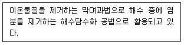
14. 오존처리공정에 관한 설명으로 옳지 않은 것은?
15. 여과 모래의 중량통과 실험으로 다음과 같은 결과를 얻었다. 이 모래의 균등계수는?
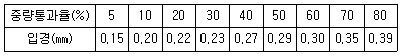
16. 슬러지처리 공정에 해당하는 것을 모두 고른 것은?
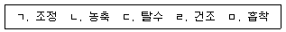
17. 유효수심이 5 m 이고, 체류시간이 4 시간인 횡류식 침전지의 이론적 수면적부하율(m3/m2ㆍay)은?
18. 맛ㆍ냄새 물질의 제거 공정으로 옳은 것을 모두 고른 것은?
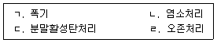
19. 배출수 및 슬러지 처리공정 운영에 관한 설명으로 옳지 않은 것은?
20. 소독제에 관한 설명으로 옳지 않은 것은?
2과목: 수질분석 및 관리
21. 수질오염공정시험기준상 단위가 옳지 않은 것은?
22. 먹는물관리법령상 먹는샘물의 수질관리를 위한 자동계측기의 운영ㆍ관리기준에 관한 설명으로 옳지 않은 것은?
23. 고속응집침전지 선택시 고려해야 할 조건으로 옳지 않은 것은?
24. 수도법령상 일반수도사업자가 수도시설을 갖추고자 할 때 안전 및 보안을 위한 시설기준으로 옳지 않은 것은?
25. 수도법령상 상수도보호구역에 거주하는 주민 또는 농림ㆍ수산업 등에 종사하는 자에 관한 지원사업이 아닌 것은?
26. 소독에 의한 불활성화비 계산방법에 관한 설명으로 옳지 않은 것은?
27. A정수장에서 원수의 자-테스트 결과 PACl 주입율이 18 mg/L이고 원수 유입량이 1,500 m3/hr 일 때 1일 약품 투입량(kg/day)은?
28. 정수처리시설에서 사용되는 오존처리법의 특징으로 옳지 않은 것은?
29. 활성탄의 흡착능력에 영향을 미치는 요인이 아닌 것은?
30. 먹는물관리법상 염지하수란 물속에 녹아있는 염분 등 총용존고형물의 함량이 얼마이상이어야 하는가?
31. 하천법상 국가하천에 관한 설명으로 옳지 않은 것은?
32. 먹는물수질공정시험기준상 우라늄에 관한 설명으로 옳은 것은?
33. 다음은 먹는물수질공정시험기준상 미생물 시험용 시료채취 및 보존에 관한 내용이다. ( )에 들어갈 내용을 바르게 나열한 것은?
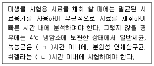
34. 먹는물 수질기준 및 검사 등에 관한 규칙상 심미적 영향물질에 포함되지 않는 것은?
35. 수질오염공정시험기준상 용기에 의한 유량측정시 최대 유량이 1 m3/min 미만인 경우 유량측정방법에 관한 설명으로 옳지 않은 것은?
36. 다음은 수처리제의 기준과 규격 및 표시기준상 내용이다. ( )에 공통으로 들어갈 수처리제는?
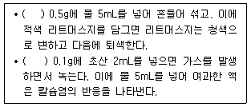
37. 수질오염공정시험기준상 시료 전처리 방법 중 산분해법에 해당하지 않는 것은?
38. 물환경보전법령상 상수원구간에서 조류경계발령시 취수장 및 정수장 관리자가 취해야 할 조치사항이 아닌 것은?
39. 먹는물공정시험기준상 미생물 항목 측정을 위한 시료채취 시 염소이온의 방해를 없애기 위해 넣어주는 용액은?
40. KMnO4의 그램 당량(g)은 얼마인가? (단, KMnO4의 분자량은 158이다.)
3과목: 설비운영(기계·장치 또는 계측기 등)
41. 막여과시설의 전처리설비를 모두 고른 것은?
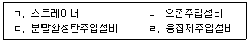
42. 정수처리시설의 농축조 설비에 관한 설명으로 옳은 것은?
43. 정수용 약품과 내식성 재료의 연결이 옳은 것은?
44. 오존발생장치와 관련 있는 것은?
45. 침전지 슬러지의 배출설비에 관한 설명으로 옳지 않은 것은?
46. 급속여과지의 하부집수장치에 관한 설명으로 옳지 않은 것은?
47. 정수지의 유입관, 유출관 및 우회관에 설치하는 설비에 관한 설명으로 옳지 않은 것은?
48. 탁도계에 관한 설명으로 옳은 것은?
49. 전력퓨즈에 관한 설명으로 옳은 것은?
50. 전로에 시설하는 기계기구의 철대 및 금속제 외함(외함이 없는 변압기 또는 계기용변 성기는 철심)에 접지공사를 하지 않아도 되는 경우로 옳지 않은 것은?
51. 아몰퍼스변압기에 관한 설명으로 옳지 않은 것은?
52. 정수장 수전설비에 설치된 변압기의 용량은 20 MVA이고, %임피던스는 5 %이다. 변압기 2차측에 설치할 차단기의 차단용량(MVA)은?
53. 상수도시설에 사용되는 보호계전기에 관한 설명으로 옳지 않은 것은?
54. 3상 유도전동기의 기동법이 아닌 것은?
55. 염소가스 누설검지기 설치 시 유의사항이 아닌 것은?
56. 펌프 축수 및 축수통(Packing Box)의 과열원인에 관한 설명으로 옳지 않은 것은?
57. 펌프에 관한 설명으로 옳지 않은 것은?
58. 산업안전보건법상 유해인자별 노출 농도의 허용기준 산정과 관련되는 것을 모두 고른 것은?
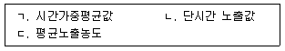
59. 유량제어용 밸브는?
60. 산업안전보건법령상 안전검사대상기계등에 해당하는 것을 모두 고른 것은?
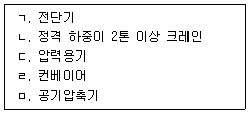
4과목: 정수시설 수리학
61. 차원을 가지는 물리량에 해당하는 것을 모두 고른 것은?
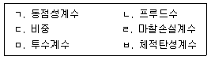
62. 베르누이 정리에 관한 설명으로 옳은 것은?
63. 수심 3 m인 개수로에서 수면 아래 0.6 m와 2.4 m에서의 유속이 각각 1.4 m/s와 0.6 m/s인 경우, 평균유속(m/s)은?
64. u=xy+x2일 때 2차원 비압축성 유체에 대한 연속방정식을 이용하여 v를 구하면? (단, Y=0일 때 v=1이다.)
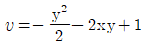
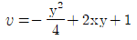
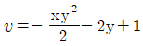
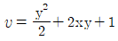
65. 가로축을 속도경사, 세로축을 전단응력으로 하여 뉴턴유체(Newtonian fluid)를 그리면 어떤 형상을 가지는가?
66. 비중이 1.02인 바닷물에 전체 부피의 10 %가 수면 밖으로 떠 있는 빙산이 있는 경우, 빙산의 비중은?
67. 이상유체에서의 속도수두 v2/(2g)를 실제유체에 적용하기 위한 무차원 상수는?
68. 유량측정을 목적으로 사용할 수 없는 것은?
69. 개수로에서 정상부등류를 표현한 것으로 옳은 것은? (단, V는 속도벡터이다.)
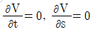
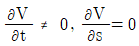
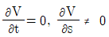
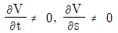
70. Moody 도표로 관마찰계수의 크기를 결정하는 경우 주요 인자는?
71. 통수단면적이 0.5 m2, 윤변이 5 m, 동수경사(I)가 0.01이고 조도계수(n)가 0.02인 개수로 흐름에서 Manning 공식을 이용하여 구한 유속(m/s)은 약 얼마인가? (단, 경심을 R이라 할 때, Manning 공식의 유속은 1/n × R2/3 × I1/2이다.)
72. 직경 1 m의 관에 유량 0.3 m3/s의 물이 4 km를 이동할 때 마찰손실수두(m)는 약 얼마인가? (단, 마찰손실계수는 0.018이다.)
73. 폭 10 m, 길이 40 m, 깊이 3 m인 침전지에 지름이 2 m인 원형관을 통하여 평균유속 1 m/s로 물이 유입되고 있다. 이 침전지에서 100 % 제거할 수 있는 입자의 최소 침강속도(m/day)는 약 얼마인가?
74. 급속여과지에 관한 설명으로 옳지 않은 것은?
75. 침전지에 유입되는 플록의 제거효율을 높이는 방법으로 옳지 않은 것은?
76. Chick의 1차 소독 반응속도법칙을 이용하는 경우, 미생물의 농도가 초기에 비해 절반으로 줄어드는데 걸리는 시간(day)은 약 얼마인가? (단, 살균속도상수(k)는 0.8 /day이다.)
77. 펌프의 상사법칙에서 임펠러의 직경이 동일할 때, 양정(H)과 회전속도(N)의 관계는? (단, H1은 N1 회전시의 양정, H2는 N2 회전시의 양정이다.)
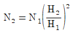
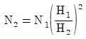
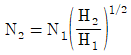
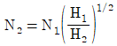
78. A펌프장에서 펌프의 토출량이 0.4 m3/min, 흡입구의 유속을 1.6 m/s로 양수할 때 토출관의 지름(mm)은?
79. A펌프장이 다음의 조건으로 가동되는 경우 펌프의 효율(%)은 약 얼마인가?
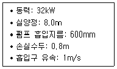
80. A펌프장에서 최고효율점의 양수량이 600 m3/hr, 전양정이 6 m, 회전속도가 800 rpm인 조건으로 운영되는 경우 펌프의 비속도는 약 얼마인가?